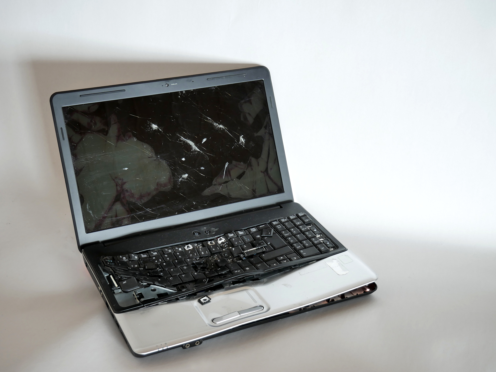
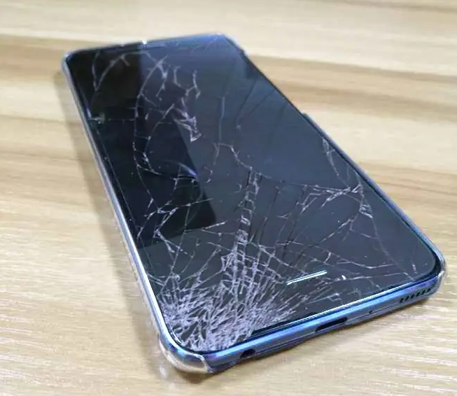
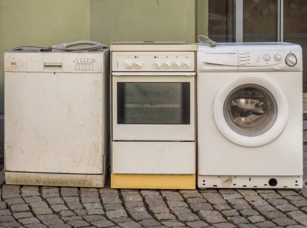
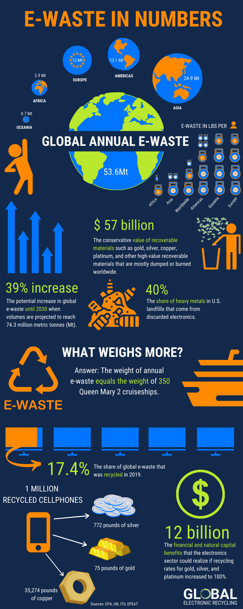

- "E-waste is the fastest growing solid waste stream in the world.
- In 2019, an estimated 53.6 million tonnes of e-waste were produced globally, but only 17.4% was documented as formally collected and recycled.
- Lead is one of the common substances released into the environment if e-waste is recycled, stored or dumped using inferior activities, such as open burning.
- E-waste recycling activities may have several adverse impacts on human health. Children and pregnant women are particularly vulnerable.
- ILO and WHO estimate that millions of women and child labourers working in the informal recycling sector around the world may be at risk of e-waste exposure."
Source: WHO, 2023
